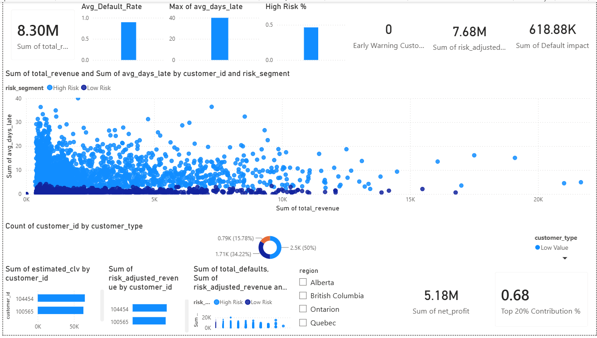

Banking Profitability & Risk Analytics

Business Problem
This project delivers an end-to-end analytics solution to evaluate customer profitability, credit risk, and revenue concentration within a banking portfolio.
By integrating multi-source financial data and applying risk-adjusted modeling, the dashboard enables stakeholders to identify:
- High-value vs high-risk customers
- True profitability after accounting for defaults
- Revenue concentration across customer segments
- Opportunities for optimizing portfolio performance
The solution combines SQL-based data transformation, DAX-driven KPI modeling, and interactive dashboarding to support strategic decision-making.
Objectives
Traditional banking metrics often focus on revenue generation, overlooking the impact of credit risk and default behavior.
This project addresses key business questions:
- Which customers generate sustainable profit?
- Are high-revenue customers also high-risk?
- How concentrated is revenue among top customers?
- What is the true net profitability after adjusting for risk?
Technology Used
Python
Pandas
Numpy
Matplotlib
Seaborn
SQL
Power BI
Tableau
Excel
Project Workflow
- Data generation & Collection
- Data Cleaning
- EDA
- Feature Engineering
- SQL Analysis
- Dashboard Creation
Business KPIs
- Total Revenue
- Average Default Rate
- Risk Adjusted Revenue
- Max Average Days Late
- High Risk %
- Early Warning Customers
- Default Impact
- Net Profit
- Top 20% Concentration
Dashboard Preview